🧪 Эксперименты с VeraCrypt
Эксперимент 1: Создание зашифрованного тома
📌 Пошаговая инструкция
Шаг 1. Запуск VeraCrypt
Открой программу VeraCrypt от имени администратора (ПКМ → "Запуск от имени администратора").
Шаг 2. Нажать "Создать том..."
В основном окне нажмите «Создать том...» — это запустит мастер создания зашифрованного тома.
Шаг 3. Выбрать тип тома
Выберите первый вариант:
🔘 Создать зашифрованный файл-контейнер
Это значит, что шифрованный том будет представлять собой один файл на диске.
Нажмите Далее.
Шаг 4. Тип тома — стандартный
Оставьте выбор по умолчанию:
🔘 Обычный том VeraCrypt
(скрытые тома будем использовать в других экспериментах)
Нажмите Далее.
Шаг 5. Указание расположения файла
Нажмите кнопку "Выбрать файл..."
Укажи расположение, например:
C:\Users\Твое_Имя\Documents\experiment1.hc
Введите имя файла: experiment1.hc
(расширение .hc означает "hidden container" — просто принятое VeraCrypt имя, это не означает, что он скрытый).
⚠️ Важно: если выбрать уже существующий файл — он будет перезаписан! Поэтому указываем новое имя.
Нажмите Сохранить, затем Далее.
Шаг 6. Выбор алгоритмов шифрования
Оставьте по умолчанию:
Алгоритм шифрования: AES
Алгоритм хэширования: SHA-512
Нажмите Далее.
Шаг 7. Размер тома
Введите размер, например: 100 MB
(это будет размер твоего "виртуального зашифрованного диска").
Нажмите Далее.
Шаг 8. Установка пароля
Придумай и введи надежный пароль (от 8 символов, можно с цифрами и спецзнаками).
Запомни или запиши его в надёжном месте.
Нажми Далее.
⚠️ Внимание: если забудешь пароль, никак нельзя будет восстановить доступ!
Шаг 9. Файловая система
Оставь тип FAT или выбери NTFS, если планируешь хранить большие файлы.
Двигай мышкой по окну 30 секунд (для генерации случайных данных).
Нажми Форматировать — будет создан файл-контейнер.
💾 Программа создаст файл experiment1.hc по указанному пути.
Когда появится сообщение «Том успешно создан» — нажми OK → Выход.
💡 Шаг 10. Монтирование тома
Теперь монтируем созданный том как виртуальный диск:
В главном окне VeraCrypt выбери любую букву диска (например, X:).
Нажми Выбрать файл... и укажи файл experiment1.hc.
Нажми Смонтировать, введи пароль.
Появится новый диск в проводнике — это и есть зашифрованный контейнер.
📝 Результат эксперимента
Создан виртуальный диск (X:), защищённый паролем.
Все файлы, которые ты туда скопируешь, будут автоматически зашифрованы на лету.
Никто не сможет прочитать содержимое файла experiment1.hc без пароля и программы VeraCrypt.
При отключении монтирования или выключении ПК, диск исчезает.
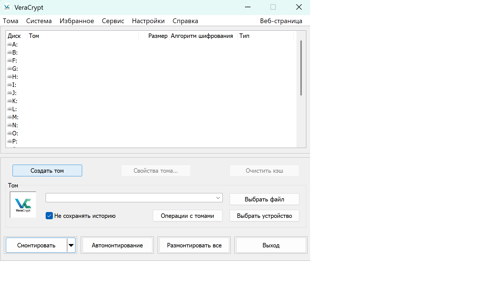
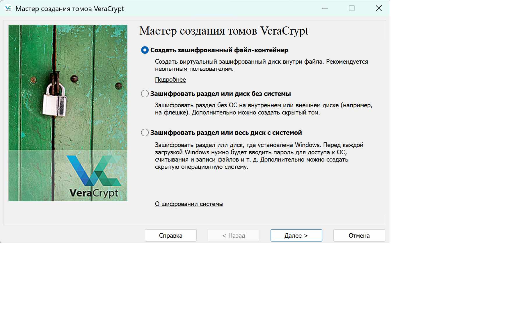
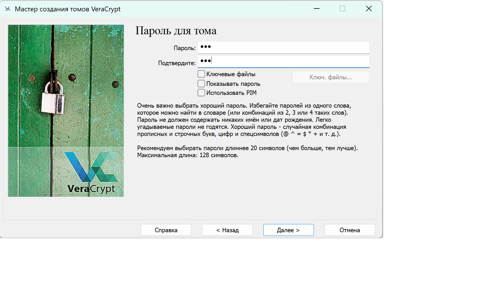
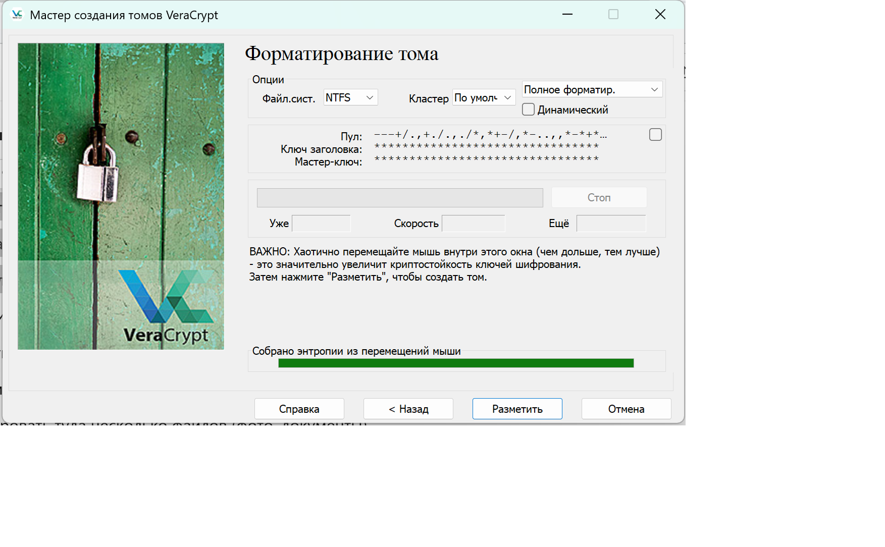
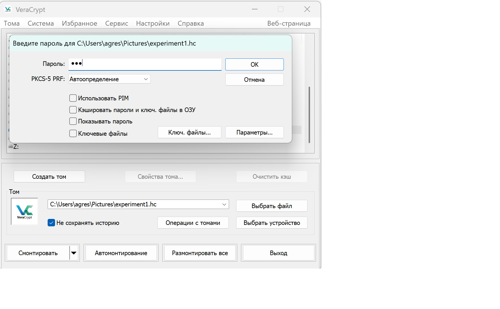
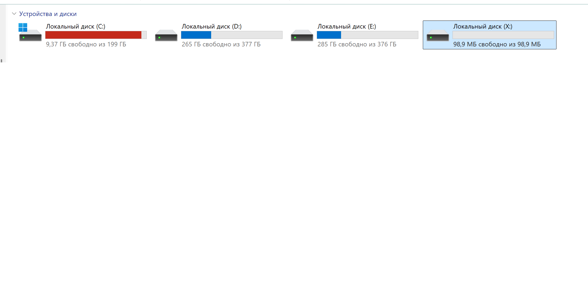
Эксперимент 2: Скрытый том
📌 Пошаговая инструкция
Шаг 1. Подключение флешки
Подключи флешку к USB-порту.
Убедись, что система её распознала (можно открыть проводник и посмотреть букву, например E:).
Шаг 2. Запуск VeraCrypt
Открой VeraCrypt от имени администратора.
Шаг 3. Открытие мастера шифрования
Нажми кнопку «Создать том...»
Выбери второй вариант:
🔘 Зашифровать несистемный раздел/диск
Нажми Далее.
Шаг 4. Выбор шифруемого устройства
Нажми Устройство...
Найди в списке свою флешку (будет указана как Removable Disk, пример: \Device\Harddisk2\Partition1).
Внимательно выбери только флешку, чтобы не потерять данные с других дисков.
Нажми OK → Далее.
Шаг 5. Выбор типа тома
Выбираем:
🔘 Обычный том VeraCrypt
(Скрытые — в других экспериментах)
Нажми Далее.
Шаг 6. Выбор режима шифрования
Оставь по умолчанию:
Алгоритм шифрования: AES
Алгоритм хэширования: SHA-512
Нажми Далее.
Шаг 7. Полная или быстрая очистка
Выбери:
🔘 Полное форматирование
(более безопасно, так как затирает старые данные)
Нажми Далее.
Шаг 8. Пароль
Введи надёжный пароль.
Длина: минимум 10 символов.
Запомни или сохрани — восстановить невозможно.
Нажми Далее.
Шаг 9. Форматирование и шифрование
Выбирай файловую систему: FAT, если нужна совместимость с разными ОС, или NTFS, если будешь использовать только в Windows.
Двигай мышкой по окну, чтобы создать случайные данные (30–60 сек).
Нажми Форматировать.
⏱️ Процесс может занять несколько минут (зависит от объёма флешки).
Когда появится сообщение об успешном создании — нажми OK → Выход.
💡 Шаг 10. Монтирование зашифрованной флешки
Теперь, чтобы использовать флешку:
Открой VeraCrypt.
Выбери букву, например Z:.
Нажми Устройство... и выбери свою флешку.
Нажми Смонтировать, введи пароль.
Флешка появится в проводнике как обычный диск Z:, но всё, что ты туда скопируешь, будет на лету шифроваться.
📤 Как безопасно отключать флешку
В VeraCrypt нажми Демонтировать.
Только после этого отключай устройство.
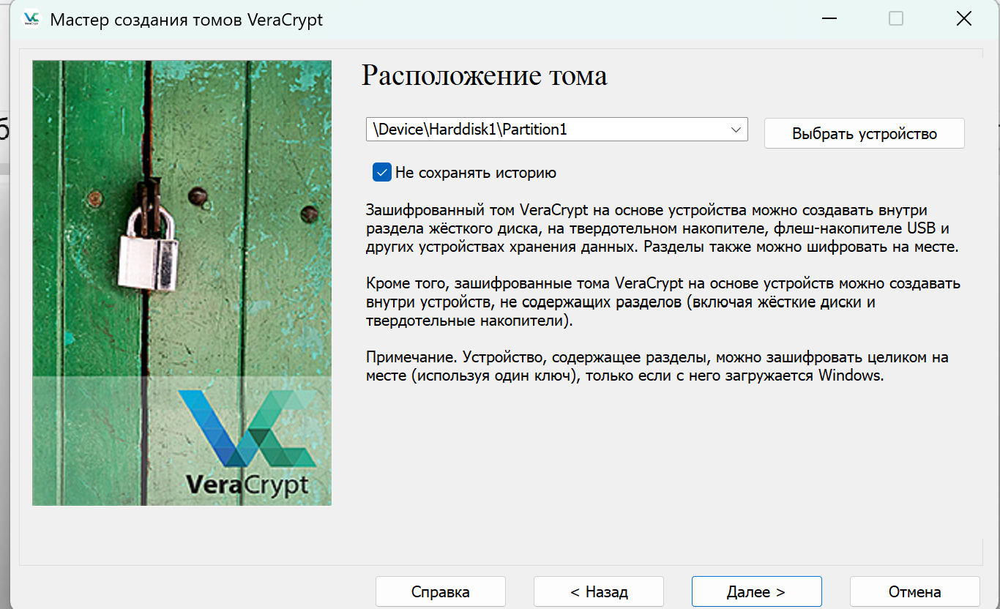
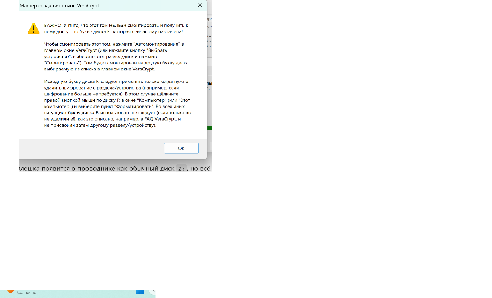
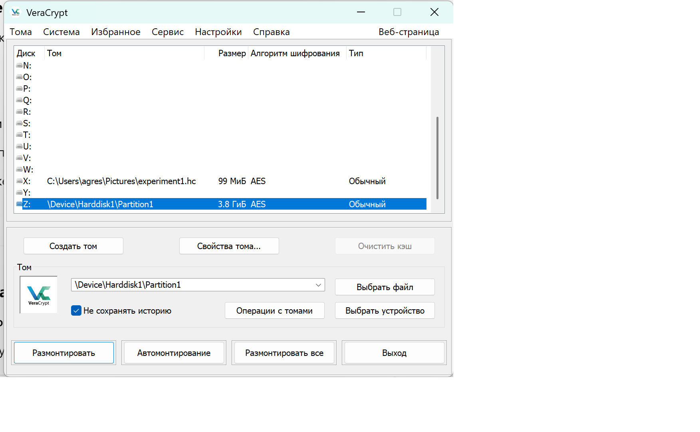
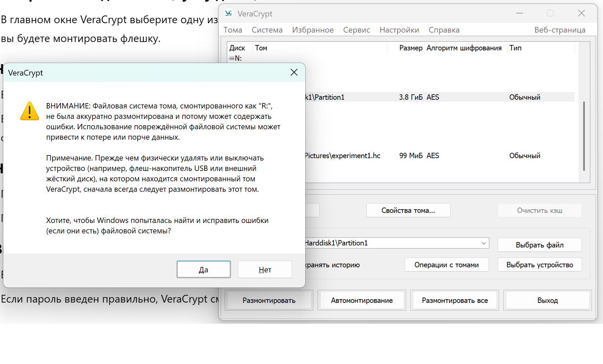
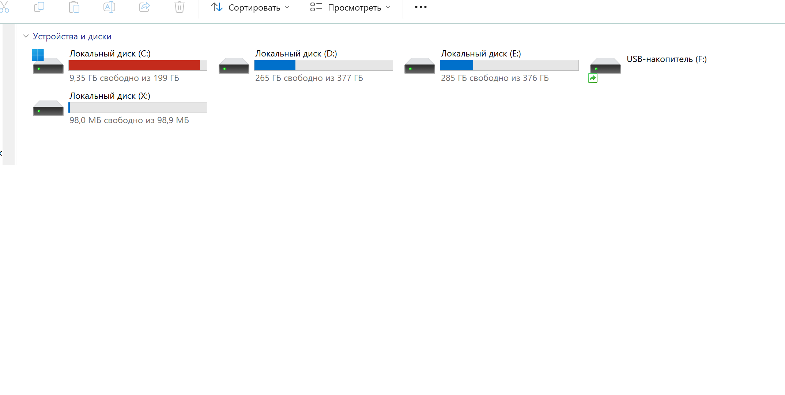
Эксперимент 3: Шифрование системного раздела
📌 Пошаговая инструкция
Шаг 1. Запуск VeraCrypt от имени администратора
Нажми правой кнопкой мыши на VeraCrypt → "Запуск от имени администратора".
Шаг 2. Запуск шифрования системного раздела
В меню выбери «Системный том» → нажми «Шифровать системный раздел/диск».
Шаг 3. Выбор варианта шифрования
Выбери «Обычное шифрование системного раздела».
Шаг 4. Выбор алгоритмов шифрования и хэширования
Обычно можно оставить AES и SHA-512 по умолчанию.
Шаг 5. Установка пароля
Придумай надежный пароль, минимум 8 символов. Запомни его — без него доступ к системе будет невозможен.
Шаг 6. Тест загрузчика
Программа проверит совместимость загрузчика VeraCrypt с твоей системой.
Шаг 7. Начало шифрования
Подтверди и начни шифрование. Это займет несколько часов, в зависимости от объема диска.
Шаг 8. Перезагрузка и вход в систему
После шифрования компьютер перезагрузится. Для входа теперь нужно будет вводить пароль VeraCrypt.
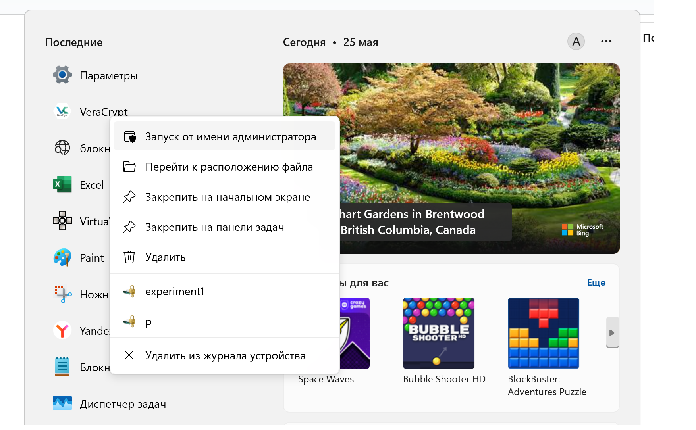
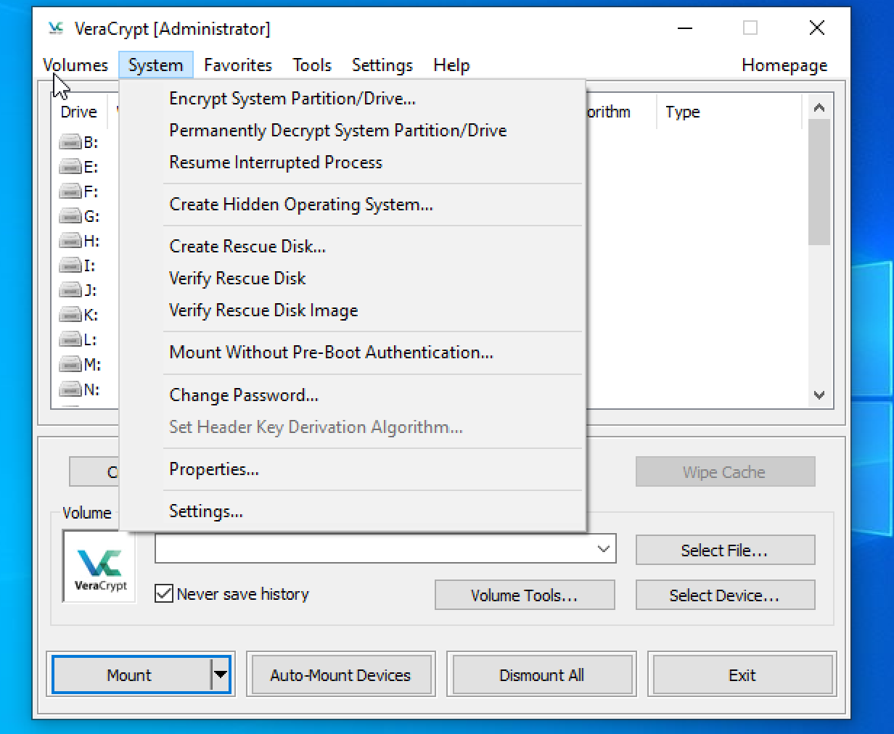
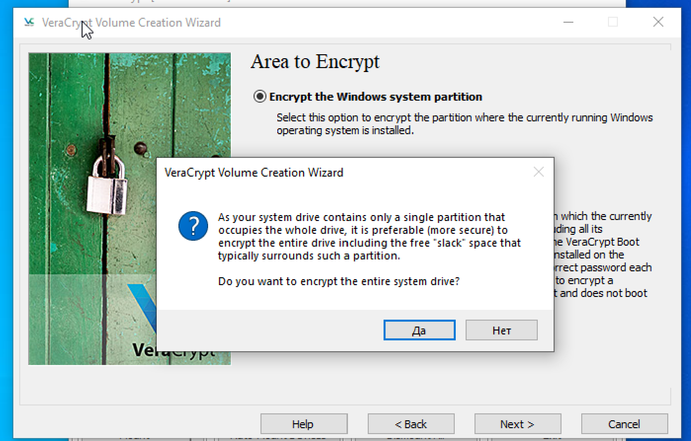
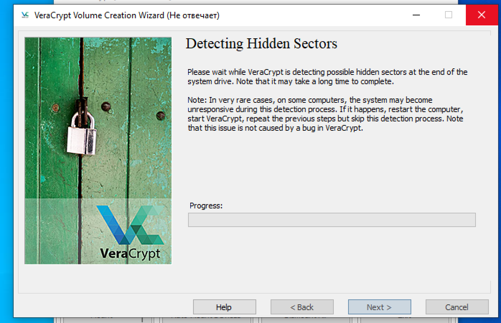
Эксперимент 4: Защита с помощью ключевого файла
📌 Цель
Создать зашифрованный том, доступ к которому возможен только при вводе пароля и наличии специального ключевого файла.
📌 Пошаговая инструкция
Шаг 1. Запуск VeraCrypt
Запусти VeraCrypt от имени администратора (ПКМ на ярлыке → «Запуск от имени администратора»).
Шаг 2. Создание нового тома
Нажми «Создать том» (Create Volume).
Шаг 3. Тип тома
Выбери:
🔘 «Создать зашифрованный файл-контейнер» (Create an encrypted file container)
Нажми Далее.
Шаг 4. Тип шифрования
Выбери:
🔘 «Обычный том VeraCrypt» (Standard VeraCrypt volume)
Нажми Далее.
Шаг 5. Указание файла
Нажми «Выбрать файл...» (Select File...)
Укажи путь и имя (например: keyfile_volume.hc)
Нажми Сохранить → Далее.
Шаг 6. Алгоритмы
Выбери:
🔒 Шифрование: AES
🔑 Хэширование: SHA-512
Нажми Далее.
Шаг 7. Размер тома
Введи, например: 150 МБ
Нажми Далее.
Шаг 8. Установка пароля
Придумай пароль, затем поставь галочку:
☑️ «Использовать ключевые файлы» (Use keyfiles)
Нажми «Ключевые файлы...» (Keyfiles...).
Шаг 9. Создание ключевого файла
В открывшемся окне нажми:
«Создать случайный ключевой файл...» (Generate Random Keyfile...)
Сохрани файл (например, на флешку).
Убедись, что он добавлен в список → нажми OK → Далее.
Шаг 10. Форматирование
Двигай мышкой в течение 30–60 сек (для генерации случайности), затем нажми Форматировать.
Дождись завершения процесса → нажми OK → Выход.
🔐 Теперь для монтирования тома нужно:
1. Выбрать файл-том.
2. Указать пароль.
3. Добавить тот же ключевой файл (в том же порядке и количестве).
Без него монтирование будет невозможно.
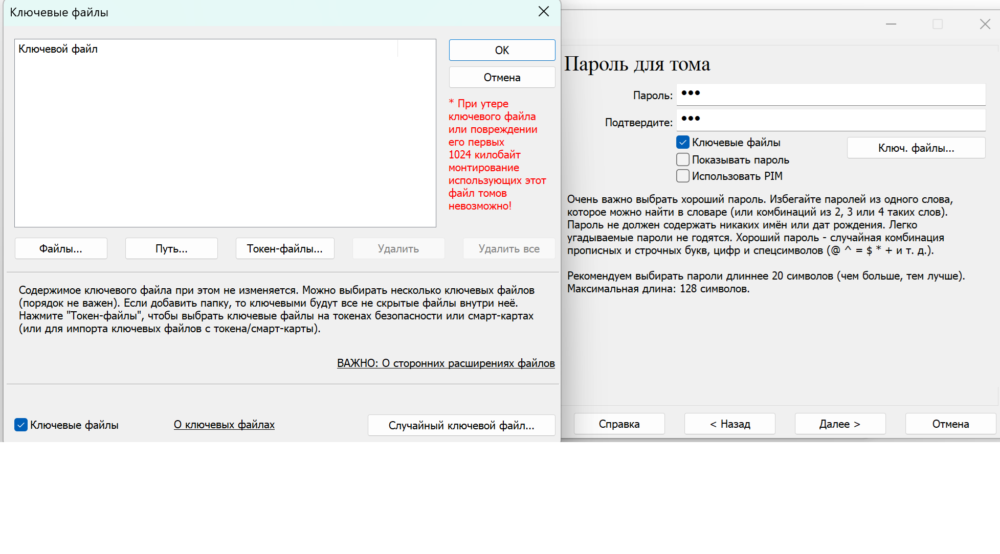
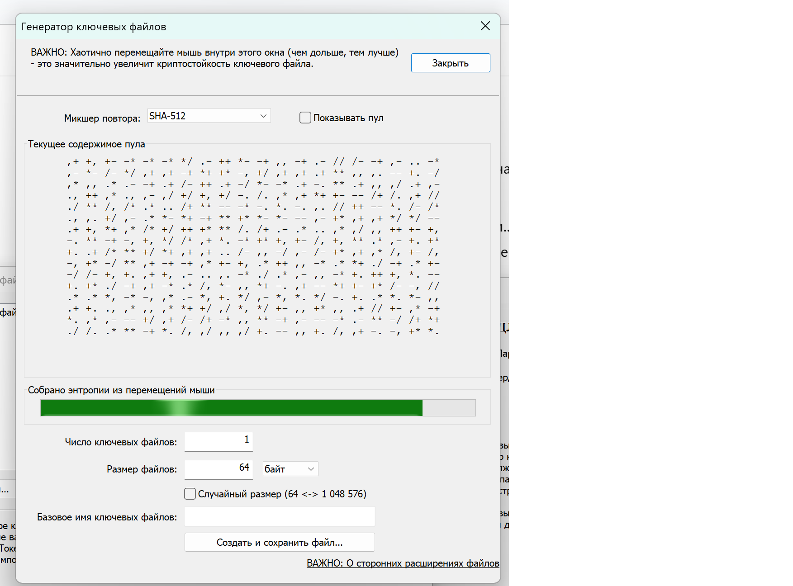
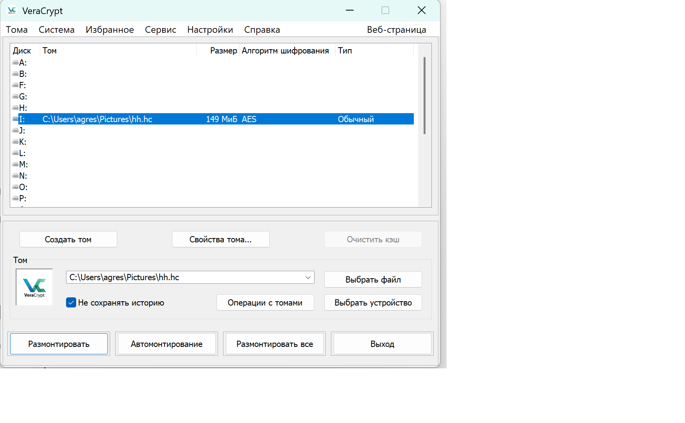
Эксперимент 5: Скрытый том VeraCrypt
📌 Цель
Создать скрытый зашифрованный том внутри обычного, чтобы при принуждении можно было открыть внешний (видимый) том, не выдав наличие скрытого.
📌 Пошаговая инструкция
Шаг 1. Запуск VeraCrypt
Запусти VeraCrypt от имени администратора.
Шаг 2. Создание тома
Нажми «Создать том» (Create Volume).
Шаг 3. Тип тома
Выбери:
🔘 «Создать скрытый том VeraCrypt» (Create a hidden VeraCrypt volume)
Нажми Далее.
Шаг 4. Режим скрытого тома
Выбери:
🔘 «Создать новый внешний и скрытый том» (Normal mode)
Нажми Далее.
Шаг 5. Указание файла
Нажми «Выбрать файл...»
Укажи имя и путь (например: hiddenvolume.hc) → Сохранить → Далее.
Шаг 6. Алгоритмы для внешнего тома
Шифрование: AES
Хэш: SHA-512
Нажми Далее.
Шаг 7. Размер внешнего тома
Пример: 200 МБ
Нажми Далее.
Шаг 8. Пароль внешнего тома
Придумай пароль → Далее.
Шаг 9. Файловая система
Выбери файловую систему (например, FAT) → двигай мышкой → Форматировать → OK.
Шаг 10. Создание скрытого тома
Укажи размер (меньше, чем внешний, например, 100 МБ) → Далее.
Шаг 11. Алгоритмы скрытого тома
Шифрование: AES
Хэш: SHA-512
Нажми Далее.
Шаг 12. Пароль скрытого тома
Придумай другой пароль (не такой, как у внешнего!) → Далее.
Шаг 13. Форматирование скрытого тома
Выбери файловую систему → двигай мышкой → Форматировать → OK → Выход.
🔐 При монтировании:
— Если ввести пароль от внешнего тома — откроется внешний.
— Если ввести пароль от скрытого — откроется скрытый.
Таким образом, можно «правдоподобно отрицать» наличие второго тома.
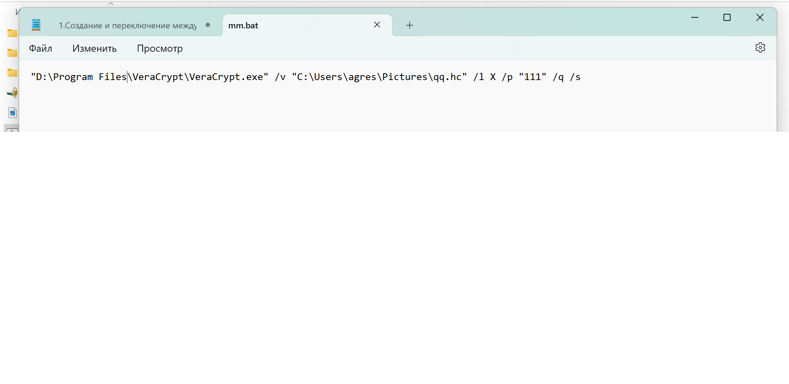
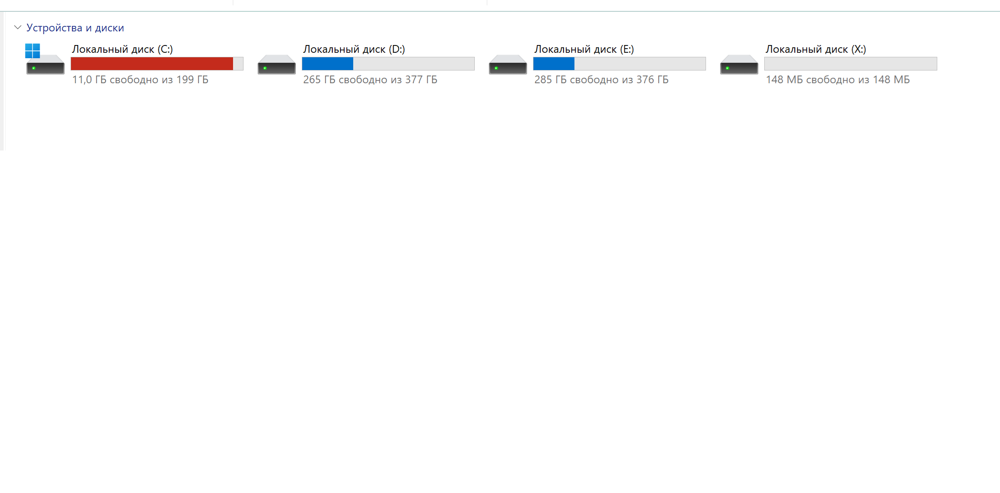
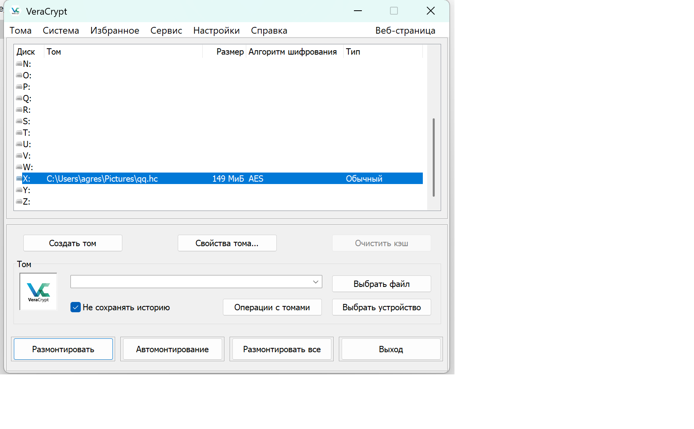